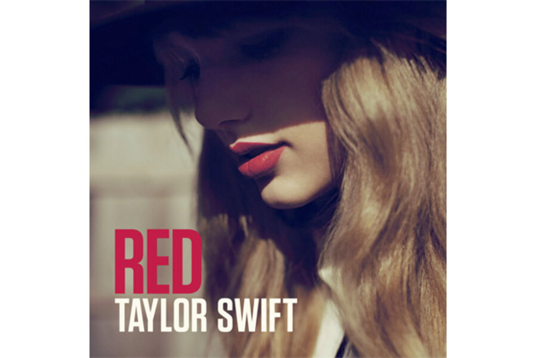
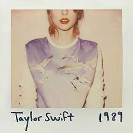
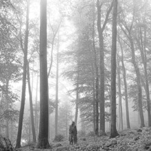

KEHIDUPAN DAN KARIER TAYLOR SWIFT

KEHIDUPAN AWAL TAYLOR SWIFT
Taylor Alison Swift lahir pada tanggal 13 Desember 1989, di West Reading, Pennsylvania, U.S. Ayahnya,
Scott Kingsley Swift, dulunya bekerja sebagai penasihat keuangan Merrill Lynch, dan ibunya, Andrea Gardner
Swift (nama belakang Finlay), seorang ibu rumah tangga yang dulunya bekerja sebagai seorang eksekutif
penjualan dana bersama. Swift, yang menyatakan dia mempunyai keturunan Skotlandia, dinamai seperti nama
penyanyi-penulis lagu James Taylor. Adik laki-lakinya, Austin Kingsley Swift, adalah seorang aktor.
Swift
menghabiskan awal-awal tahun hidupnya di sebuah perkebunan pohon Natal yang ayahnya beli dari salah satu
kliennya. Swift mengidentifikasi dirinya sebagai seorang Kristen. Dia memasuki prasekolah dan taman kanak-kanak
di Alvernia Montessori School, yang dijalankan oleh biarawati-biarawati Fransiska, sebelum pindah ke The Wyndcroft
School. Keluarga ini kemudian pindah ke sebuah rumah sewa di pinggiran kota Wyomissing, Pennsylvania,
yang mana dia memasuki Wyomissing Area Junior/Senior High School. Pada usia sembilan tahun, Taylor Swift
tertarik pada teater musikal dan tampil di empat produksi Berks Youth Theatre Academy. Dia juga bepergian
secara teratur ke New York untuk mengikuti pelajaran vokal dan akting.
Swift kemudian memfokuskan dirinya
memfokuskan dirinya ke musik country, yang terinspirasi dari lagu-lagu Shania Twain, yang membuatnya "hanya ingin berlari
mengitari blok sebanyak empat kali dan bermimpi tentang segalanya." Dia menghabiskan akhir-akhir pekan
tampil di festival dan acara lokal. Setelah menonton film dokumenter Faith Hill, Swift merasa yakin dia
harus pergi ke Nashville, Tennessee, untuk mengejar karier musik. Pada usia sebelas tahun, dia pergi
dengan ibunya untuk mengunjungi label-label rekaman Nashville dan memasukkan sebuah rekaman demo cover
karaoke dari Dolly Parton dan Dixie Chicks. Akan tetapi, dia ditolak karena "semua orang di kota ingin melakukan
apa yang kulakukan. jadi, aku terus berpikir cara agar berbeda".
Ketika Swift berusia sekitar 12 tahun, seorang
tukang reparasi komputer dan musisi lokal bernama Ronnie Cremer mengajarinya bagaimana cara memainkan gitar dan
membantu Swift atas karya pertamanya sebagai seorang penulis lagu, membuatnya menulis lagu berjudul, "Lucky You".
Di tahun 2003, Swift dan orang tuanya mulai bekerja dengan manajer musik yang berbasis di New York bernama Dan Dymtrow.
Dengan bantuannya, Swift menjadi model untuk Abercrombie & Fitch sebagai bagian dari kampanye "Rising Stars", mempunyai
sebuah lagu orisinil yang masuk ke CD kompilasi Maybelline, dan menghadiri rapat dengan label-label rekaman besar.
Setelah membawakan lagu-lagu orisinil dipertunjukan RCA Records, Swift diberikan kontrak pengembangan artis dan mulai sering
bepergian ke Nashville dengan ibunya.
Demi membantu Swift masuk di musik country, ayahnya pindah ke kantor Merrill Lynch di
Nashville ketika dia berusia 14 tahun, dan keluarga ini tinggal dirumah depan-danau di Hendersonville, Tennessee. Swift memasuki
SMA umum, tetapi setelah dua tahun pindah ke Aaron Academy, melalui homeschooling agar bisa mengakomodasi jadwal turnya, dan dia
lulus setahun lebih awal.
Album Taylor Swift dari Masa ke Masa
Album Taylor Swift
"Taylor Swift"
 Taylor Swift adalah album studio debut eponymous oleh penyanyi-penulis lagu country pop Amerika yaitu Taylor Swift. Album ini dirilis pada akhir tahun 2006 ketika Swift baru berusia 16 tahun,
dengan Big Machine Records. Swift menulis lagu untuk album tersebut selama dia mahasiswa tahunan sekolah tinggi dan telah menulis kredit pada semua lagu album termasuk yang ditulis bersama
Liz Rose. Swift bereksperimen untuk merekam album dengan beberapa produser album, akhirnya memilih produsen album demo, Nathan Chapman. Secara musikal, album musik country ini dengan gaya dan lirik,
itu berbicara tentang hubungan romantis, Swift menulis dari mengamati hubungan pasangan sebelum berada di salah satu. Taylor Swift diterima positif oleh para kritikus kontemporer, yang memuji bakat Swift.
Album ini menikmati sukses komersial, di Amerika Serikat, naik ke nomor lima di Billboard 200, menduduki puncak Top Country Albums Bagan selama dua puluh empat minggu berturut-turut, dan bersertifikat lima kali
platinum oleh Recording Industry Association of America (RIAA). Taylor Swift telah masuk 274 minggu di Billboard Top 200 / Pop Albums chart pada awal 2013, menjadikannya salah satu dari 12 album terpanjang dalam
sejarah chart lima puluh tujuh tahun. Album ini juga sangat sukses di Kanada, Australia, dan Inggris. Lima single yang dirilis dari album, yang semuanya bersertifikat platinum oleh RIAA. "Tim McGraw" dirilis sebagai
singel utama dari Taylor Swift; ia menjadi sepuluh besar di Billboard Hot Country Songs. "Teardrops on My Guitar" dirilis sebagai singel kedua dari Taylor Swift, menjadi lagu charting terbaik dari Taylor Swift pada
Billboard Hot 100. "Our Song" dirilis sebagai single ketiga dari album dan menjadi lagu pertama Swift nomor satu di Hot Country Songs. "Picture to Burn" dan "Should've Said No" yang dirilis sebagai single tunggal dan
kelima keempat dari album, masing-masing, keduanya menjadi sukses di tangga lagu country-genre dalam Amerika Serikat dan memuncak di nomor delapan belas terakhir pada New Zealand Singles Chart. Swift mempromosikan
Taylor Swift dengan tampil di beberapa tempat, termasuk pembukaannya untuk Rascal Flatts, George Strait, Brad Paisley, dan Tim McGraw dan Faith Hill.
Taylor Swift adalah album studio debut eponymous oleh penyanyi-penulis lagu country pop Amerika yaitu Taylor Swift. Album ini dirilis pada akhir tahun 2006 ketika Swift baru berusia 16 tahun,
dengan Big Machine Records. Swift menulis lagu untuk album tersebut selama dia mahasiswa tahunan sekolah tinggi dan telah menulis kredit pada semua lagu album termasuk yang ditulis bersama
Liz Rose. Swift bereksperimen untuk merekam album dengan beberapa produser album, akhirnya memilih produsen album demo, Nathan Chapman. Secara musikal, album musik country ini dengan gaya dan lirik,
itu berbicara tentang hubungan romantis, Swift menulis dari mengamati hubungan pasangan sebelum berada di salah satu. Taylor Swift diterima positif oleh para kritikus kontemporer, yang memuji bakat Swift.
Album ini menikmati sukses komersial, di Amerika Serikat, naik ke nomor lima di Billboard 200, menduduki puncak Top Country Albums Bagan selama dua puluh empat minggu berturut-turut, dan bersertifikat lima kali
platinum oleh Recording Industry Association of America (RIAA). Taylor Swift telah masuk 274 minggu di Billboard Top 200 / Pop Albums chart pada awal 2013, menjadikannya salah satu dari 12 album terpanjang dalam
sejarah chart lima puluh tujuh tahun. Album ini juga sangat sukses di Kanada, Australia, dan Inggris. Lima single yang dirilis dari album, yang semuanya bersertifikat platinum oleh RIAA. "Tim McGraw" dirilis sebagai
singel utama dari Taylor Swift; ia menjadi sepuluh besar di Billboard Hot Country Songs. "Teardrops on My Guitar" dirilis sebagai singel kedua dari Taylor Swift, menjadi lagu charting terbaik dari Taylor Swift pada
Billboard Hot 100. "Our Song" dirilis sebagai single ketiga dari album dan menjadi lagu pertama Swift nomor satu di Hot Country Songs. "Picture to Burn" dan "Should've Said No" yang dirilis sebagai single tunggal dan
kelima keempat dari album, masing-masing, keduanya menjadi sukses di tangga lagu country-genre dalam Amerika Serikat dan memuncak di nomor delapan belas terakhir pada New Zealand Singles Chart. Swift mempromosikan
Taylor Swift dengan tampil di beberapa tempat, termasuk pembukaannya untuk Rascal Flatts, George Strait, Brad Paisley, dan Tim McGraw dan Faith Hill.
"Fearless"
 Fearless adalah album studio kedua karya penyanyi-penulis lagu asal Amerika, Taylor Swift. Album ini dirilis pada 11 November 2008 oleh Big Machine Records di AS dan Kanada, edisi internasionalnya dirilis pada 9 Maret 2009.
Sebagian besar ditulis selama Swift mempromosikan album debut eponimnya pada tahun 2007 - 2008, Fearless berisi penulisan lagu tambahan dari Liz Rose, Hillary Lindsey, Colbie Caillat, dan John Rich. Swift menulis tujuh dari tiga belas lagu
dalam edisi standar album ini seorang diri, dan, dalam debutnya sebagai seorang produser rekaman, memproduksi seluruh lagunya bersama Nathan Chapman. Fearless adalah sebuah album country pop menampilkan permainan instrumen musik country
seperti banjo, fiddle, mandolin, dan gitar akustik, diselingi dengan gitar elektrik. Para kritikus musik telah mencatat daya tarik crossover album ini yang disebabkan oleh pengaruh berbagai gaya di dalamnya, termasuk pop, folk, dan rok.
Terinspirasi oleh perasaan Swift sebagai seorang remaja, lirik album tersebut menjelajahi romansa, patah hati, dan aspirasi. Judulnya merujuk pada tema menyeluruh dalam semua lagu album ini, di mana secara keseluruhan mereka menggambarkan
keberanian Swift merangkul tantangan dalam cinta. Swift mengadakan Fearless Tour untuk mendukung perilisan Fearless, yang berlangsung mulai April 2009 hingga Juli 2010. Lima singel dirilis untuk mempromosikan album ini, termasuk tiga entri
10 besar Billboard Hot 100: "Love Story", "You Belong with Me", dan "Fearless". Dua lagu tersebut yang lebih dahulu disebutkan meraih kesuksesan baik di radio country maupun pop. Album ini memuncaki Billboard 200 AS selama sebelas minggu dan
telah disertifikasi Intan oleh Asosiasi Industri Rekaman Amerika Serikat (RIAA). Album tersebut juga memasuki lima besar di tangga album dan menerima sertifikasi multi-platinum di Australia, Britania Raya, Kanada, dan Selandia Baru, serta telah
menjual 12 juta salinan sejak April 2021. Para kritikus musik memuji keterampilan penulisan lagu Swift dalam Fearless yang menawarkan lagu-lagu ramah radio serta narasi yang menarik, walaupun beberapa dari mereka menganggap produksinya formulaik.
Album ini memenangkan Album Terbaik Tahun Ini baik di Penghargaan Asosiasi Musik Country maupun Penghargaan Akademi Musik Country pada tahun 2009. Di Penghargaan Grammy 2010, album tersebut menerima penghargaan Album Terbaik Tahun Ini dan Album Country
Terbaik. Fearless didaftar oleh Rolling Stone pada tahun 2022 sebagai salah satu dari 100 album country terbaik sepanjang masa. Menyusul perdebatan mengenai kepemilikan katalog lama Swift pada tahun 2019, ia merilis rekaman ulang dari album ini, Fearless
(Taylor's Version), pada April 2021.
Fearless adalah album studio kedua karya penyanyi-penulis lagu asal Amerika, Taylor Swift. Album ini dirilis pada 11 November 2008 oleh Big Machine Records di AS dan Kanada, edisi internasionalnya dirilis pada 9 Maret 2009.
Sebagian besar ditulis selama Swift mempromosikan album debut eponimnya pada tahun 2007 - 2008, Fearless berisi penulisan lagu tambahan dari Liz Rose, Hillary Lindsey, Colbie Caillat, dan John Rich. Swift menulis tujuh dari tiga belas lagu
dalam edisi standar album ini seorang diri, dan, dalam debutnya sebagai seorang produser rekaman, memproduksi seluruh lagunya bersama Nathan Chapman. Fearless adalah sebuah album country pop menampilkan permainan instrumen musik country
seperti banjo, fiddle, mandolin, dan gitar akustik, diselingi dengan gitar elektrik. Para kritikus musik telah mencatat daya tarik crossover album ini yang disebabkan oleh pengaruh berbagai gaya di dalamnya, termasuk pop, folk, dan rok.
Terinspirasi oleh perasaan Swift sebagai seorang remaja, lirik album tersebut menjelajahi romansa, patah hati, dan aspirasi. Judulnya merujuk pada tema menyeluruh dalam semua lagu album ini, di mana secara keseluruhan mereka menggambarkan
keberanian Swift merangkul tantangan dalam cinta. Swift mengadakan Fearless Tour untuk mendukung perilisan Fearless, yang berlangsung mulai April 2009 hingga Juli 2010. Lima singel dirilis untuk mempromosikan album ini, termasuk tiga entri
10 besar Billboard Hot 100: "Love Story", "You Belong with Me", dan "Fearless". Dua lagu tersebut yang lebih dahulu disebutkan meraih kesuksesan baik di radio country maupun pop. Album ini memuncaki Billboard 200 AS selama sebelas minggu dan
telah disertifikasi Intan oleh Asosiasi Industri Rekaman Amerika Serikat (RIAA). Album tersebut juga memasuki lima besar di tangga album dan menerima sertifikasi multi-platinum di Australia, Britania Raya, Kanada, dan Selandia Baru, serta telah
menjual 12 juta salinan sejak April 2021. Para kritikus musik memuji keterampilan penulisan lagu Swift dalam Fearless yang menawarkan lagu-lagu ramah radio serta narasi yang menarik, walaupun beberapa dari mereka menganggap produksinya formulaik.
Album ini memenangkan Album Terbaik Tahun Ini baik di Penghargaan Asosiasi Musik Country maupun Penghargaan Akademi Musik Country pada tahun 2009. Di Penghargaan Grammy 2010, album tersebut menerima penghargaan Album Terbaik Tahun Ini dan Album Country
Terbaik. Fearless didaftar oleh Rolling Stone pada tahun 2022 sebagai salah satu dari 100 album country terbaik sepanjang masa. Menyusul perdebatan mengenai kepemilikan katalog lama Swift pada tahun 2019, ia merilis rekaman ulang dari album ini, Fearless
(Taylor's Version), pada April 2021.
"Speak Now"
 Speak Now adalah album studio ketiga karya penyanyi-penulis lagu asal Amerika Taylor Swift, dirilis pada 25 Oktober 2011 melalui Big Machine Records. Swift menulis seluruh lagu dalam album ini seorang diri selama dua tahun, sementara ia mempromosikan album studio
keduanya Fearless (2008). Terinspirasi oleh transisi Swift dari seorang remaja menuju kedewasaan, Speak Now adalah sebuah album konsep longgar mengenai pengakuannya tentang cinta dan patah hati, dengan beberapa lagu terkait pengalaman publiknya. Diproduksi oleh Swift
dan Nathan Chapman, album ini mengombinasikan country pop, pop rok, dan power pop dengan sensibilitas rok dan melodi yang dicirikan oleh instrumen akustik serta gitar elektrik, senar, dan drum yang dinamis. Setelah perilisan album ini, Swift mengadakan Speak Now World Tour,
yang mengunjungi Amerika Utara, Asia, Eropa, dan Oseania mulai Februari 2011 hingga Maret 2012. Album tersebut didukung oleh enam singel, termasuk dua entri 10 besar Billboard Hot 100 AS, "Mine" dan "Back to December" dan dua singel nomor satu Hot Country Songs AS, "Sparks Fly"
dan "Ours". Speak Now menerima ulasan-ulasan yang umumnya positif dari para kritikus musik untuk menawarkan keterlibatan emosional dan lagu-lagu yang ramah radio. Beberapa kritikus memuji perspektif Swift yang dewasa, walaupun beberapa lainnya menganggap tema-tema balas dendam
dan patah hati dalam lagu-lagunya dangkal. Album tersebut hadir di daftar album terbaik dekade 2010-an Billboard dan Spin, dan dalam daftar 2012 Rolling Stone untuk album wanita terbaik sepanjang masa. Speak Now memuncaki tangga album dan menerima sertifikasi multi-platinum di
Australia (dobel platinum) dan Kanada (tripel platinum). Di AS, album ini menjual satu juta kopi dalam minggu pertamanya, menempati nomor satu Billboard 200 selama enam minggu, dan disertifikasi enam kali platinum oleh Asosiasi Industri Rekaman Amerika Serikat (RIAA). Di Penghargaan
Grammy ke-54 pada tahun 2012, album tersebut dinominasikan untuk Album Country Terbaik, dan singel ketiganya "Mean" memenangkan Lagu Country Terbaik dan Penampilan Solo Country Terbaik. Secara retrospeksi, para kritikus telah menjuluki Speak Now salah satu album country 2010-an terbaik
dan menggambarkan lagu-lagunya yang berisi tentang citra publik Swift sebagai preseden untuk penulisan lagu sang penyanyi dalam album-albumnya selanjutnya.
Speak Now adalah album studio ketiga karya penyanyi-penulis lagu asal Amerika Taylor Swift, dirilis pada 25 Oktober 2011 melalui Big Machine Records. Swift menulis seluruh lagu dalam album ini seorang diri selama dua tahun, sementara ia mempromosikan album studio
keduanya Fearless (2008). Terinspirasi oleh transisi Swift dari seorang remaja menuju kedewasaan, Speak Now adalah sebuah album konsep longgar mengenai pengakuannya tentang cinta dan patah hati, dengan beberapa lagu terkait pengalaman publiknya. Diproduksi oleh Swift
dan Nathan Chapman, album ini mengombinasikan country pop, pop rok, dan power pop dengan sensibilitas rok dan melodi yang dicirikan oleh instrumen akustik serta gitar elektrik, senar, dan drum yang dinamis. Setelah perilisan album ini, Swift mengadakan Speak Now World Tour,
yang mengunjungi Amerika Utara, Asia, Eropa, dan Oseania mulai Februari 2011 hingga Maret 2012. Album tersebut didukung oleh enam singel, termasuk dua entri 10 besar Billboard Hot 100 AS, "Mine" dan "Back to December" dan dua singel nomor satu Hot Country Songs AS, "Sparks Fly"
dan "Ours". Speak Now menerima ulasan-ulasan yang umumnya positif dari para kritikus musik untuk menawarkan keterlibatan emosional dan lagu-lagu yang ramah radio. Beberapa kritikus memuji perspektif Swift yang dewasa, walaupun beberapa lainnya menganggap tema-tema balas dendam
dan patah hati dalam lagu-lagunya dangkal. Album tersebut hadir di daftar album terbaik dekade 2010-an Billboard dan Spin, dan dalam daftar 2012 Rolling Stone untuk album wanita terbaik sepanjang masa. Speak Now memuncaki tangga album dan menerima sertifikasi multi-platinum di
Australia (dobel platinum) dan Kanada (tripel platinum). Di AS, album ini menjual satu juta kopi dalam minggu pertamanya, menempati nomor satu Billboard 200 selama enam minggu, dan disertifikasi enam kali platinum oleh Asosiasi Industri Rekaman Amerika Serikat (RIAA). Di Penghargaan
Grammy ke-54 pada tahun 2012, album tersebut dinominasikan untuk Album Country Terbaik, dan singel ketiganya "Mean" memenangkan Lagu Country Terbaik dan Penampilan Solo Country Terbaik. Secara retrospeksi, para kritikus telah menjuluki Speak Now salah satu album country 2010-an terbaik
dan menggambarkan lagu-lagunya yang berisi tentang citra publik Swift sebagai preseden untuk penulisan lagu sang penyanyi dalam album-albumnya selanjutnya.
"RED"

Red adalah album studio keempat karya penyanyi-penulis lagu asal Amerika Serikat, Taylor Swift. Album ini dirilis pada 22 Oktober 2012 oleh Big Machine Records. Judulnya merujuk kepada emosi "merah" yang riuh yang dialami Swift dalam pengonsepan album ini; lagu-lagunya mendiskusikan
perasaan-perasaan yang rumit dan bertentangan sebagai akibat dari romansa yang memudar. Berharap untuk bisa mencoba bunyi-bunyi baru untuk mengembangkan musiknya melebihi gaya musik country pop, Swift bekerja sama dengan produser-produser baru seperti Dann Huff, Max Martin, Shellback,
Jeff Bhasker, Dan Wilson, Jacknife Lee, dan Butch Walker, di samping kolaborator lamanya, Nathan Chapman. Produk akhirnya merupakan sebuah koleksi lagu-lagu pop, country, dan rok dengan elemen musik folk dan elektronik, diambil dari beberapa sub-genre seperti arena rock, Britrock, pop dansa,
dan dubstep. Big Machine mempromosikan Red sebagai sebuah album country, tetapi banyak kritikus memperdebatkan kategorisasinya, menyebut album ini sebagai sebuah rekaman pop. Album tersebut didukung oleh tujuh singel, empat di antaranya memuncak di dalam 10 besar Billboard Hot 100 AS; singel
utamanya, "We Are Never Ever Getting Back Together" meraih posisi pertama, sementara "Begin Again", "I Knew You Were Trouble", dan "Red" masing-masing mencapai nomor tujuh, dua, dan enam. Album ini menempati puncak Billboard 200 AS selama tujuh minggu, menjadikan Swift artis wanita pertama,
dan artis kedua sejak the Beatles, untuk memiliki tiga album konsekutif untuk menempati nomor satu tangga album tersebut selama setidaknya enam minggu. Album tersebut memuncaki tangga album Australia, Britania Raya, Kanada, dan Selandia Baru. Red telah disertifikasi tujuh kali platinum oleh
Asosiasi Industri Rekaman Amerika Serikat (RIAA) dan telah menerima sertifikasi multiplatinum di negara-negara lainnya. Album ini menerima nominasi untuk Album Terbaik Tahun Ini di Penghargaan Asosiasi Musik Country 2013, serta Album Terbaik Tahun ini dan Album Country Terbaik di Penghargaan
Grammy 2014. Swift mempromosikan album tersebut dengan the Red Tour, tur konser country tersukses sepanjang masa, meraup pendapatan sebesar $150 juta. Penulisan lagu Swift dalam Red diterima dengan positif oleh para kritikus, tetapi jangkauan soniknya membelah pendapat mereka; keragaman bunyi
di dalamnya memperoleh pujian, sementara inkonsistensi dalam album tersebut dikritik. Dalam ulasan-ulasan retrospeksi, berbagai kritikus telah mengklaim Red sebagai karya terbaik Swift dan sebuah rekaman transisi yang menjembatani landasan country sang penyanyi menuju pop arus utama. Album
tersebut hadir dalam beberapa daftar album terbaik dari dekade 2010-an, dan ditempatkan di nomor 99 dari revisi 2020 500 Album Terbaik Sepanjang Masa majalah Rolling Stone. Menyusul perselisihan terkait kepemilikan masternya, sebuah rekaman ulang dari album ini, berjudul Red (Taylor's Version),
dirilis pada tahun 2021.
"1989"

1989 adalah album studio kelima karya penyanyi-penulis lagu asal Amerika Taylor Swift. Album ini dirilis pada 27 Oktober 2014 oleh Big Machine Records. Setelah para kritikus musik mempertanyakan statusnya sebagai seorang musisi country menyusul perilisan album keempatnya Red (2012) yang dipengaruhi
oleh musik pop dan elektronik, Swift terinspirasi oleh musik synth-pop 1980-an untuk mengkalibrasi ulang keseniannya menuju musik pop. Dalam 1989, dinamai menurut tahun lahir sang penyanyi untuk menandai kelahiran kembali artistiknya, Swift mengerahkan Max Martin sebagai produser eksekutif bersama dirinya.
Bunyi synth-pop album ini dicirikan oleh penyintesis yang berat, drum yang terprogram, dan vokal latar yang terproses. Lagu-lagunya, mengembangkan praktik penulisan lagu Swift yang mengambil inspirasi dari kehidupan pribadinya, mengekspresikan perspektif ceria mengenai hubungan-hubungan yang gagal, meninggalkan
sikapnya dahulu yang agresif. Swift dan Big Machine mempromosikan album ini dengan berbagai dukungan produk, penampilan televisi dan radio, serta media sosial. Mereka menarik 1989 dari layanan streaming gratis seperti Spotify, menimbulkan wacana industri mengenai dampak streaming terhadap penjualan musik.
Setelah perilisan album ini, Swift mengadakan the 1989 World Tour, yang merupakan tur konser berpenghasilan tertinggi tahun 2015. 1989 didukung oleh tujuh singel, dengan tiga di antaranya memuncaki Billboard Hot 100 AS: "Shake It Off", "Blank Space", dan "Bad Blood". Para kritikus secara umum memuji album tersebut
untuk emosi dan melodi di dalamnya, tetapi beberapa mengkhawatirkan produksi synth-popnya yang dirasa mengikis autentisitas Swift sebagai seorang penulis lagu lantaran sifat musik pop yang kapitalis. Berbagai publikasi mendaftar 1989 sebagai salah satu album terbaik dari dekade 2010-an, dengan Rolling Stone dan
Consequence menempatkannya di antara yang terbaik sepanjang masa. Di Penghargaan Grammy ke-58 pada tahun 2016, 1989 memenangkan Album Terbaik Tahun Ini dan Album Pop Vokal Terbaik, menjadikan Swift artis solo wanita pertama untuk memenangkan Album Terbaik Tahun Ini dua kali. Di AS, album ini memuncaki Billboard 200
selama sebelas minggu dan disertifikasi sembilan kali platina oleh Asosiasi Industri Rekaman Amerika Serikat (RIAA). Album tersebut juga menerima sertifikasi multi-platinum di Australia, Britania Raya, dan Kanada. Komentar-komentar retrospeksi menganggap 1989 sebagai kunci sukses transformasi citra Swift menjadi seorang
ikon pop yang mempromosikan poptimisme, sementara juga menyorot bagaimana integritas artistik dan citra publiknya menderita pengawasan media yang kian meningkat.
"Reputation"
 Reputation adalah album studio keenam oleh penyanyi-penulis lagu Amerika Taylor Swift. Album ini dirilis pada 10 November 2017, oleh Big Machine Records. Swift menjadi subjek pengawasan tabloid yang merajalela setelah merilis album studio kelimanya 1989 (2014), dengan media yang mempublikasikan kehidupan pribadinya dan perselisihannya
dengan selebriti lainnya. Oleh karena itu, dia mengasingkan diri dari pers dan media sosial, di mana dia telah mempertahankan kehadirannya secara aktif, dan menciptakan Reputasi sebagai upaya untuk mengubah pikirannya. Dipengaruhi oleh kontroversi itu, Swift menulis Reputasi dengan dua tema utama; satu menggambar dari gosip berlebihan
yang mengelilinginya, dan yang lainnya tentang menemukan cinta di tengah-tengah peristiwa yang penuh gejolak. Dia merekrut produser Jack Antonoff, Max Martin, dan Shellback dalam produksi album. Menandai perubahan besar dari gaya synth-pop pendahulunya, reputation dibuat dengan gaya dark electropop dan R&B, terinspirasi oleh genre urban
seperti EDM ,hip hop ,trap ,dan Miami bass , menghasilkan musik yang berat. Produksi elektronik yang terdiri dari mesin drum yang berdenyut, synthesizer yang membengkak,dan vokal yang dimanipulasi. Untuk berkoordinasi dengan motif album, Swift tidak mempromosikan reputation melalui wawancara pers, tidak seperti album sebelumnya. Empat single internasional
" Look What You Made Me Do", "...Ready for It?", "End Game" menampilkan Ed Sheeran dan Future , dan "Delicate"—mendukung album; mereka memuncak di nomor satu, empat, delapan belas dan dua belas di Billboard Hot 100 . " Gorgeous" dan "Call It What You Want" mendahului album sebagai lagu promosi, sementara "New Year's Day" dan "Getaway Car" ke radio Australia.
Tanggapan kritis terhadap reputation umumnya positif. Peninjau terbagi pada suara kurang ajar dan tema kasar, tetapi memuji penulisan lagu Swift yang tangguh, khususnya pada lagu-lagu tentang keintiman romantis. Beberapa kritikus merasa album ini adalah catatan pribadi di mana Swift menjadi rentan terhadap kekasih yang tulus dan menemukan jati dirinya. Album
ini adalah album keempat Swift berturut-turut yang debut di puncak Billboard 200 AS dengan penjualan minggu pertama lebih dari 1,2 juta kopi, dan mencapai nomor satu di berbagai negara, termasuk Australia, Kanada, dan Inggris. Terjual lebih dari 4,5 juta kopi pada tahun 2017, reputation menjadi album terlaris di dunia oleh artis wanita. Album ini didukung oleh
Reputation Stadium Tour (2018), yang menjadi tur Amerika Utara dengan pendapatan kotor tertinggi sepanjang masa. reputation dinominasikan untuk Album Vokal Pop Terbaik di Penghargaan Grammy Tahunan ke - 61 , terdaftar di Majalah Slant, daftar album terbaik dekade 2010-an, dan telah menerima sertifikasi penjualan di seluruh dunia. Swift membersihkan situs web
dan akun media sosialnya lima hari sebelum mengumumkan reputation, yang menarik perhatian luas di internet; berbagai artis sejak itu menggunakan taktik ini untuk mengumumkan musik baru.
Reputation adalah album studio keenam oleh penyanyi-penulis lagu Amerika Taylor Swift. Album ini dirilis pada 10 November 2017, oleh Big Machine Records. Swift menjadi subjek pengawasan tabloid yang merajalela setelah merilis album studio kelimanya 1989 (2014), dengan media yang mempublikasikan kehidupan pribadinya dan perselisihannya
dengan selebriti lainnya. Oleh karena itu, dia mengasingkan diri dari pers dan media sosial, di mana dia telah mempertahankan kehadirannya secara aktif, dan menciptakan Reputasi sebagai upaya untuk mengubah pikirannya. Dipengaruhi oleh kontroversi itu, Swift menulis Reputasi dengan dua tema utama; satu menggambar dari gosip berlebihan
yang mengelilinginya, dan yang lainnya tentang menemukan cinta di tengah-tengah peristiwa yang penuh gejolak. Dia merekrut produser Jack Antonoff, Max Martin, dan Shellback dalam produksi album. Menandai perubahan besar dari gaya synth-pop pendahulunya, reputation dibuat dengan gaya dark electropop dan R&B, terinspirasi oleh genre urban
seperti EDM ,hip hop ,trap ,dan Miami bass , menghasilkan musik yang berat. Produksi elektronik yang terdiri dari mesin drum yang berdenyut, synthesizer yang membengkak,dan vokal yang dimanipulasi. Untuk berkoordinasi dengan motif album, Swift tidak mempromosikan reputation melalui wawancara pers, tidak seperti album sebelumnya. Empat single internasional
" Look What You Made Me Do", "...Ready for It?", "End Game" menampilkan Ed Sheeran dan Future , dan "Delicate"—mendukung album; mereka memuncak di nomor satu, empat, delapan belas dan dua belas di Billboard Hot 100 . " Gorgeous" dan "Call It What You Want" mendahului album sebagai lagu promosi, sementara "New Year's Day" dan "Getaway Car" ke radio Australia.
Tanggapan kritis terhadap reputation umumnya positif. Peninjau terbagi pada suara kurang ajar dan tema kasar, tetapi memuji penulisan lagu Swift yang tangguh, khususnya pada lagu-lagu tentang keintiman romantis. Beberapa kritikus merasa album ini adalah catatan pribadi di mana Swift menjadi rentan terhadap kekasih yang tulus dan menemukan jati dirinya. Album
ini adalah album keempat Swift berturut-turut yang debut di puncak Billboard 200 AS dengan penjualan minggu pertama lebih dari 1,2 juta kopi, dan mencapai nomor satu di berbagai negara, termasuk Australia, Kanada, dan Inggris. Terjual lebih dari 4,5 juta kopi pada tahun 2017, reputation menjadi album terlaris di dunia oleh artis wanita. Album ini didukung oleh
Reputation Stadium Tour (2018), yang menjadi tur Amerika Utara dengan pendapatan kotor tertinggi sepanjang masa. reputation dinominasikan untuk Album Vokal Pop Terbaik di Penghargaan Grammy Tahunan ke - 61 , terdaftar di Majalah Slant, daftar album terbaik dekade 2010-an, dan telah menerima sertifikasi penjualan di seluruh dunia. Swift membersihkan situs web
dan akun media sosialnya lima hari sebelum mengumumkan reputation, yang menarik perhatian luas di internet; berbagai artis sejak itu menggunakan taktik ini untuk mengumumkan musik baru.
"Lover"
 Lover adalah album studio ketujuh oleh penyanyi-penulis lagu Amerika Taylor Swift. Album ini dirilis pada 23 Agustus 2019, melalui Republic Records. Sebagai produser eksekutif, Swift bekerja dengan produser Jack Antonoff, Louis Bell, Frank Dukes dan Joel Little di album ini. Album ini digambarkan oleh Swift sebagai "surat cinta untuk cinta itu sendiri",
album ini merayakan pasang surut cinta, menggabungkan nada yang lebih cerah dan ceria, berangkat dari suara gelap pendahulunya, Reputation (2017). Sampul album dan video musik menandai perubahan dalam penampilan visual Swift, yang sekarang mewujudkan estetika musim panas, terutama terdiri dari warna-warna pastel. Secara musikal, genre album ini adalah pop,
synth-pop, electropop and pop rock yang berisi pengaruh country, dream pop, bubblegum pop, funk, R&B, pop punk and indie pop.. Lover menampilkan kolaborasi dengan Brendon Urie dari Panic! at the Disco. Album ini didahului oleh tiga single, semua mendapatkan posisi dalam 10 besar di Billboard Hot 100; "ME!" dan "You Need to Calm Down" mendapatkan posisi
tertinggi di nomor dua, sementara title track menduduki nomor 10. Semua 18 trek album menduduki secara bersamaan di Hot 100 chart setelah perilisan album. Single keempat "The Man" menduduki di nomor 23. Album ini menerima ulasan positif dari para kritikus, yang memuji penulisan lagu Swift yang menyampaikan kematangan dan kejujuran emosional. Namun, beberapa
komentator menemukan album "terlalu panjang" dan "tidak konsisten" di beberapa tempat. Lover memulai debutnya di atas US Billboard 200 Chart, mendapat penjualan 867.000 unit di minggu pertama. Ini juga memulai debutnya di nomor satu di banyak negara termasuk Australia, Kanada, Meksiko, Belanda, Selandia Baru, Spanyol dan Inggris. Lover disertifikasi platinum
ganda oleh RIAA karena menjual lebih dari 2 juta unit di AS. Itu adalah album terlaris tahun 2019 di negara ini. Secara global, Lover adalah album studio terlaris tahun 2019. Hingga Januari 2020, album ini telah terjual lebih dari 3,2 juta kopi murni di seluruh dunia. Untuk mempromosikan album, Swift akan memulai Lover Fest, tur konser keenamnya dan tur festival
musik pertamanya, dimulai pada 20 Juni 2020. Lover menerima nominasi untuk Album Vokal Pop Terbaik di Grammy Awards ke-62, yang merupakan nominasi ketiga berturut-turut Swift dalam kategori tersebut, setelah 1989 (2014) dan Reputation (2017), sementara singelnya "You Need To Calm Down" dan "Lover" masing-masing dinominasikan untuk Penampilan Solo Pop Terbaik dan
Song of the Year. Album ini muncul di berbagai daftar musik terbaik akhir tahun 2019.
Lover adalah album studio ketujuh oleh penyanyi-penulis lagu Amerika Taylor Swift. Album ini dirilis pada 23 Agustus 2019, melalui Republic Records. Sebagai produser eksekutif, Swift bekerja dengan produser Jack Antonoff, Louis Bell, Frank Dukes dan Joel Little di album ini. Album ini digambarkan oleh Swift sebagai "surat cinta untuk cinta itu sendiri",
album ini merayakan pasang surut cinta, menggabungkan nada yang lebih cerah dan ceria, berangkat dari suara gelap pendahulunya, Reputation (2017). Sampul album dan video musik menandai perubahan dalam penampilan visual Swift, yang sekarang mewujudkan estetika musim panas, terutama terdiri dari warna-warna pastel. Secara musikal, genre album ini adalah pop,
synth-pop, electropop and pop rock yang berisi pengaruh country, dream pop, bubblegum pop, funk, R&B, pop punk and indie pop.. Lover menampilkan kolaborasi dengan Brendon Urie dari Panic! at the Disco. Album ini didahului oleh tiga single, semua mendapatkan posisi dalam 10 besar di Billboard Hot 100; "ME!" dan "You Need to Calm Down" mendapatkan posisi
tertinggi di nomor dua, sementara title track menduduki nomor 10. Semua 18 trek album menduduki secara bersamaan di Hot 100 chart setelah perilisan album. Single keempat "The Man" menduduki di nomor 23. Album ini menerima ulasan positif dari para kritikus, yang memuji penulisan lagu Swift yang menyampaikan kematangan dan kejujuran emosional. Namun, beberapa
komentator menemukan album "terlalu panjang" dan "tidak konsisten" di beberapa tempat. Lover memulai debutnya di atas US Billboard 200 Chart, mendapat penjualan 867.000 unit di minggu pertama. Ini juga memulai debutnya di nomor satu di banyak negara termasuk Australia, Kanada, Meksiko, Belanda, Selandia Baru, Spanyol dan Inggris. Lover disertifikasi platinum
ganda oleh RIAA karena menjual lebih dari 2 juta unit di AS. Itu adalah album terlaris tahun 2019 di negara ini. Secara global, Lover adalah album studio terlaris tahun 2019. Hingga Januari 2020, album ini telah terjual lebih dari 3,2 juta kopi murni di seluruh dunia. Untuk mempromosikan album, Swift akan memulai Lover Fest, tur konser keenamnya dan tur festival
musik pertamanya, dimulai pada 20 Juni 2020. Lover menerima nominasi untuk Album Vokal Pop Terbaik di Grammy Awards ke-62, yang merupakan nominasi ketiga berturut-turut Swift dalam kategori tersebut, setelah 1989 (2014) dan Reputation (2017), sementara singelnya "You Need To Calm Down" dan "Lover" masing-masing dinominasikan untuk Penampilan Solo Pop Terbaik dan
Song of the Year. Album ini muncul di berbagai daftar musik terbaik akhir tahun 2019.
"Folklore"

Folklore adalah album studio kedelapan oleh penyanyi-penulis lagu Amerika, Taylor Swift. Folklore merupakan album kejutan, dirilis pada 24 Juli 2020, melalui Republic Records. Swift menyusun Folklore dalam karantina selama Pandemi Covid-19 sebagai "kumpulan lagu dan cerita yang mengalir seperti aliran kesadaran" dari imajinasinya, dan berkolaborasi dengan produser-produser Aaron Dessner
dan Jack Antonoff secara virtual. Album ini pertama kali diumumkan Taylor Swift di media sosialnya hanya beberapa jam sebelum dirilis pada 24 Juli 2020, berselang sebelas bulan setelah album studio ketujuhnya, Lover. Folklore menjadi album kejutan yang dirilis tanpa promosi sebelumnya. Album yang berisi 16 lagu ini ditulis dan direkam dalam masa isolasi selama pandemi COVID-19.
Proses produksinya melibatkan sejumlah musisi, di antaranya Aaron Dessner, Bon Iver, dan Jack Antonoff. Video klip untuk lagu "Cardigan" yang disutradarai sendiri oleh Taylor Swift dikeluarkan bersamaan dengan rilisnya album ini. Setelah dirilis, Folklore memecahkan beberapa rekor penjualan. Album ini didengarkan di Spotify sebanyak 80,6 juta kali dalam sehari pada hari perilisannya,
jumlah paling tinggi untuk musisi wanita. "Cardigan" mendapatkan posisi no. 1 di tangga lagu Billboard Hot 100dan Folklore meraih no. 1 di peringkat album Billboard 200, menjadikan Taylor Swift sebagai artis pertama yang debut pada no. 1 di kedua peringkat Hot 100 dan Billboard 200 di minggu yang sama. Album ini juga meraih peringkat no. 1 di negara-negara lain seperti Britania Raya,
Australia, Finlandia, Norwegia, Selandia Baru, dan Belgia.
"Evermore"
 Evermore adalah album studio kesembilan oleh penyanyi-penulis lagu Amerika Serikat Taylor Swift. Album ini dirilis pada 11 Desember 2020, melalui Republic Records, kurang dari lima bulan setelah album studio kedelapan penyanyi ini, Folklore. Evermore adalah produk spontan dari
perpanjangan kolaborasi Swift dengan produser-bersama Folklore Aaron Dessner, yang mana ia telah membangun creative chemistry bersama. Swift meluncurkan Evermore sebagai sebuah album kejutan serupa perilisan Folklore, menjuluki mereka sebagai rekaman-rekaman saudari. Dia
menggambarkan Evermore sebagai sebuah cabang dari "hutan folklorian", yang mana adalah arahan musik alternatif eskapis dan terinspirasi cottagecore yang pertama kali disusunnya dengan Folklore dalam karantina selama pandemi Covid-19. Karenanya, Evermore adalah sebuah rekaman rock
alternatif, folk-pop, dan chamber rock, dibawakan oleh komposisi musim dingin dari gitar fingerpick, piano muram, string mewah dan perkusi jarang. Subyeknya dibangun di sekitar cerita impresionis dan mitos, yang terdiri dari kisah cinta, pernikahan, perselingkuhan, dan kesedihan,
disusun seperti sebuah antologi. Grup musik Amerika Bon Iver, Haim, dan the National menyumbang vokal tamu. Menerima pujian yang meluas dari para kritikus musik, Evermore dipuji untuk studi karakter, produksi eksperimentalnya, dan penampilan vokal Swift yang bernuansa dan ekspresif.
Banyak ulasan menganggap album ini sebagai sebuah sekuel atau pasangan Folklore. Evermore terdaftar oleh berbagai publikasi dalam peringkat akhir tahun mereka untuk album terbaik tahun 2020, dan telah dinominasikan untuk Album of the Year dalam 64th Annual Grammy Awards mendatang.
Evermore adalah album studio kesembilan oleh penyanyi-penulis lagu Amerika Serikat Taylor Swift. Album ini dirilis pada 11 Desember 2020, melalui Republic Records, kurang dari lima bulan setelah album studio kedelapan penyanyi ini, Folklore. Evermore adalah produk spontan dari
perpanjangan kolaborasi Swift dengan produser-bersama Folklore Aaron Dessner, yang mana ia telah membangun creative chemistry bersama. Swift meluncurkan Evermore sebagai sebuah album kejutan serupa perilisan Folklore, menjuluki mereka sebagai rekaman-rekaman saudari. Dia
menggambarkan Evermore sebagai sebuah cabang dari "hutan folklorian", yang mana adalah arahan musik alternatif eskapis dan terinspirasi cottagecore yang pertama kali disusunnya dengan Folklore dalam karantina selama pandemi Covid-19. Karenanya, Evermore adalah sebuah rekaman rock
alternatif, folk-pop, dan chamber rock, dibawakan oleh komposisi musim dingin dari gitar fingerpick, piano muram, string mewah dan perkusi jarang. Subyeknya dibangun di sekitar cerita impresionis dan mitos, yang terdiri dari kisah cinta, pernikahan, perselingkuhan, dan kesedihan,
disusun seperti sebuah antologi. Grup musik Amerika Bon Iver, Haim, dan the National menyumbang vokal tamu. Menerima pujian yang meluas dari para kritikus musik, Evermore dipuji untuk studi karakter, produksi eksperimentalnya, dan penampilan vokal Swift yang bernuansa dan ekspresif.
Banyak ulasan menganggap album ini sebagai sebuah sekuel atau pasangan Folklore. Evermore terdaftar oleh berbagai publikasi dalam peringkat akhir tahun mereka untuk album terbaik tahun 2020, dan telah dinominasikan untuk Album of the Year dalam 64th Annual Grammy Awards mendatang.
"Midnights"
 Midnights adalah album studio kesepuluh karya penyanyi-penulis lagu Amerika Taylor Swift, yang dirilis pada 21 Oktober 2022, melalui Republic Records. Diumumkan di Penghargaan Video Musik MTV 2022, album ini adalah karya pertama Swift sejak album-album 2020-nya, Folklore dan Evermore. Midnights adalah sebuah album konsep tentang kontemplasi nokturnal, ditulis dan diproduksi oleh Swift dengan Jack Antonoff sebagai kolaborator utamanya.
Album ini terinspirasi oleh "13 malam-malam tanpa tidur" dalam hidup Swift. Dia mengangkat sebuah estetika visual glamor untuk album ini, diambil dari mode dan seni 1970-an. Menghindari bunyi alternative folk dari Folklore dan Evermore, Swift bereksperimen dengan gaya musik elektronika, synth-pop, dream pop, dan chill-out dalam Midnights, menggunakan groove yang halus, penyintesis antik, mesin drum, dan irama hip hop. Isi albumnya menampilkan lirik yang terbuka namun samar, mendiskusikan autokritik, kepercayaan diri, keraguan diri, kegelisahan, dan insomnia.
Setelah promosi terbatas untuk album-album studionya sebelumnya, Swift kembali menggunakan roll-out album tradisionalnya untuk Midnights. Dia mengumumkan daftar lagunya melalui sebuah serial TikTok berjudul Midnights Mayhem with Me dari 21 September hingga 7 Oktober 2022, mengungkapkan penampilan Lana Del Rey dalam lagu keempat, "Snow on the Beach". Tujuh lagu bonus dirilis pada 21 Oktober, diikuti oleh video musik untuk "Anti-Hero" dan "Bejeweled", yang pertama disebutkan merupakan singel utama album ini, dan lagu nomor satu kesembilan Swift di Billboard Hot 100
Midnights disambut dengan pujian meluas dari para kritikus musik, yang menyanjung produksi yang terkendali, penulisan yang jujur, dan irama vokal di dalamnya. Memecahkan rekor Spotify untuk album yang paling banyak diputar dalam sehari, Midnights merupakan sebuah kesusksesan komersial di seluruh format konsumsi musik. Album ini telah memuncaki tangga album di 25 wilayah, termasuk Australia, Britania Raya, Italia, Jerman, Prancis, dan Spanyol. Di Amerika Serikat, album ini debut dengan 1,5 juta unit, menjadi album 2022 dengan penjualan terlaris dan tercepat,
mencatat minggu penjualan vinil terbesar pada abad ke-21, menjadi album nomor satu kesebelas Swift di Billboard 200, dan pada minggu yang sama menghasilkan sepuluh lagu 10 besar di Hot 100—yang terbanyak untuk sebuah album. Untuk mendukung album ini, Swift akan mengadakan The Eras Tour pada tahun 2023.
Midnights adalah album studio kesepuluh karya penyanyi-penulis lagu Amerika Taylor Swift, yang dirilis pada 21 Oktober 2022, melalui Republic Records. Diumumkan di Penghargaan Video Musik MTV 2022, album ini adalah karya pertama Swift sejak album-album 2020-nya, Folklore dan Evermore. Midnights adalah sebuah album konsep tentang kontemplasi nokturnal, ditulis dan diproduksi oleh Swift dengan Jack Antonoff sebagai kolaborator utamanya.
Album ini terinspirasi oleh "13 malam-malam tanpa tidur" dalam hidup Swift. Dia mengangkat sebuah estetika visual glamor untuk album ini, diambil dari mode dan seni 1970-an. Menghindari bunyi alternative folk dari Folklore dan Evermore, Swift bereksperimen dengan gaya musik elektronika, synth-pop, dream pop, dan chill-out dalam Midnights, menggunakan groove yang halus, penyintesis antik, mesin drum, dan irama hip hop. Isi albumnya menampilkan lirik yang terbuka namun samar, mendiskusikan autokritik, kepercayaan diri, keraguan diri, kegelisahan, dan insomnia.
Setelah promosi terbatas untuk album-album studionya sebelumnya, Swift kembali menggunakan roll-out album tradisionalnya untuk Midnights. Dia mengumumkan daftar lagunya melalui sebuah serial TikTok berjudul Midnights Mayhem with Me dari 21 September hingga 7 Oktober 2022, mengungkapkan penampilan Lana Del Rey dalam lagu keempat, "Snow on the Beach". Tujuh lagu bonus dirilis pada 21 Oktober, diikuti oleh video musik untuk "Anti-Hero" dan "Bejeweled", yang pertama disebutkan merupakan singel utama album ini, dan lagu nomor satu kesembilan Swift di Billboard Hot 100
Midnights disambut dengan pujian meluas dari para kritikus musik, yang menyanjung produksi yang terkendali, penulisan yang jujur, dan irama vokal di dalamnya. Memecahkan rekor Spotify untuk album yang paling banyak diputar dalam sehari, Midnights merupakan sebuah kesusksesan komersial di seluruh format konsumsi musik. Album ini telah memuncaki tangga album di 25 wilayah, termasuk Australia, Britania Raya, Italia, Jerman, Prancis, dan Spanyol. Di Amerika Serikat, album ini debut dengan 1,5 juta unit, menjadi album 2022 dengan penjualan terlaris dan tercepat,
mencatat minggu penjualan vinil terbesar pada abad ke-21, menjadi album nomor satu kesebelas Swift di Billboard 200, dan pada minggu yang sama menghasilkan sepuluh lagu 10 besar di Hot 100—yang terbanyak untuk sebuah album. Untuk mendukung album ini, Swift akan mengadakan The Eras Tour pada tahun 2023.
SOSIAL MEDIA TAYLOR SWIFT